@ Trust me, I got through it！I finished it.Ya ！ （攝於環台終點站蓮池潭）
（攝於環台終點站蓮池潭）
環島9
環島之最終紀行：嘉義東石------高雄市蓮池潭（白木）
東石的夜裡風聲呼呼大作，如颱風般的強勁，一早，強風仍持續著，心想這能騎嗎？本來民宿主建議可改道，不過經隊友研判越過這個區域應是順風的路程，且有第一天在枋山--車城路段落山風外加東北季風（應該是吧）的騎乘經驗，於是決定仍照原路線前進。
果然，擔心是多餘的，7:30上路後，發現沒有想像中的困難，只是風大，有點冷。沿著台17線一路竟是順風，利用這樣的風向，踩踏著我的「陽光」一路狂飆，竟然玩了起來，我是一個賽車手正在參加一場公路競速賽，注視著碼錶顯示時速高達40公里呢！（真正的比賽中這是龜速吧！肯定被海放）。
強風沒有阻力，反成了助力，感謝老天在此刻送我們的禮物「一路順風」。我想今天應該是大家騎的最快樂輕鬆的一天，因為除了不用像爬坡那樣喘呼呼的外，另一個動力就是今天就要回到可愛溫暖的家與多日不見的家人相聚，又明天可以不用騎車了。
布袋--北門--將軍--七股標示快速於眼前閃過，因為騎的太順，在某路口沒有轉彎，以致錯過往七股鹽田的最短路線，雖然及時停下在下個入口轉入（離鹽田路程較遠且逆風），終因時間關係，放棄前往。
來到古都台南，當然要品嚐當地小吃囉！近午在市區運河旁的x氏蝦捲享用國宴級的菜色，每道菜都是台南最具代表性的小吃，優質美食，讚不絕口。這餐是環島之行大家最後一次圍著圓桌，一面用餐我看著每位隊友，好捨不得大家，這幾天相處的點滴，隊友們的鼓勵相互扶持，才能 一路堅持下去，一陣鼻酸，真的我是一邊吃一邊紅著眼眶的，不過天下沒有不散的宴席，有相聚就有分離。
餐畢，啟程往終點（也是起點）高雄方向前進，穿梭在台南市區，腦海浮現求學時在台南生活的片段，景物依舊，人事已非，另人懷念的青春歲月，朋友們你們可好？
台南到高雄再熟悉不過的路段，只是一直騎一直騎，想著過去、現在、未來，感情、工作、家人。
終於，下午2時15分許，河東獅車隊抵達目的地蓮池潭，環島之行在此畫下句點。
此行讓我脫胎換骨，更有自信，面對未來我也將充滿信心，勇往直前。
2009-3.6-3.14環島，我完成了。
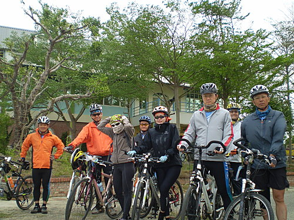
@東石靜心民宿出發
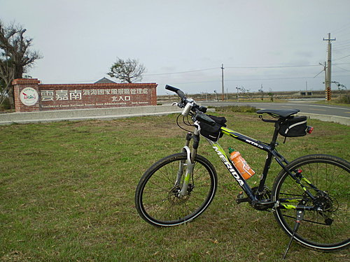
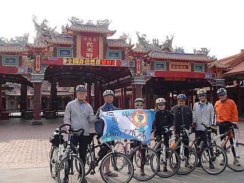
@台南代天府南鯤鯓
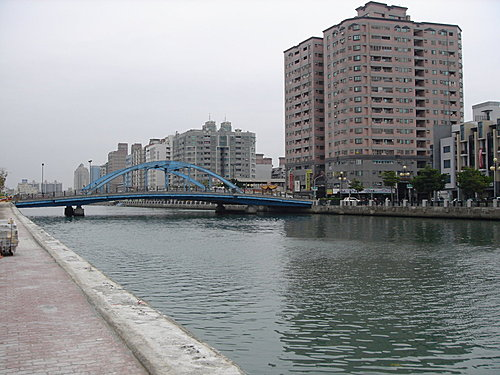
@安平運河
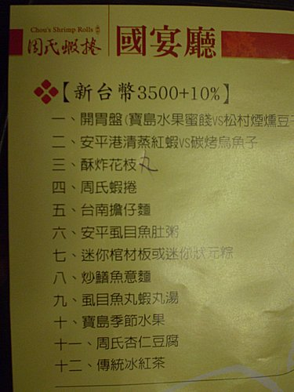
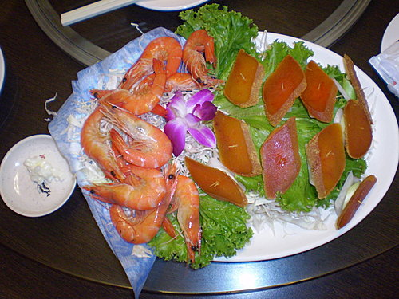
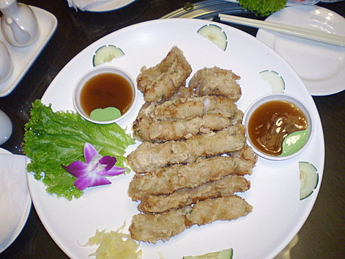
@周氏蝦卷招牌菜上桌囉
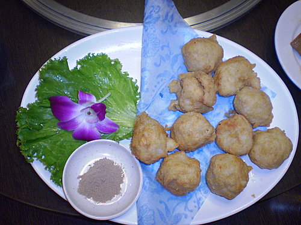
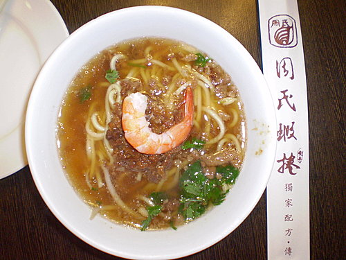
@台南擔仔面
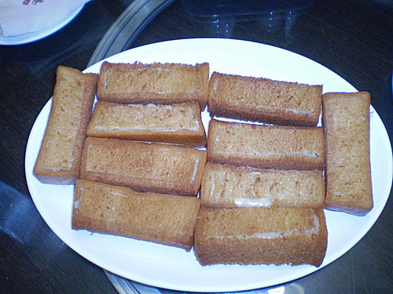
@棺材板
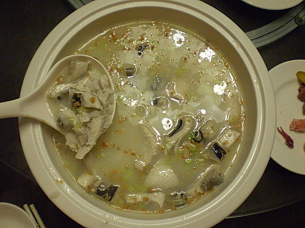
@虱目魚肚粥
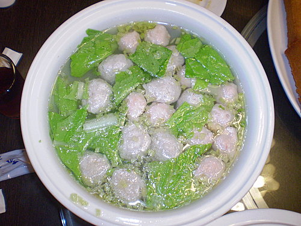
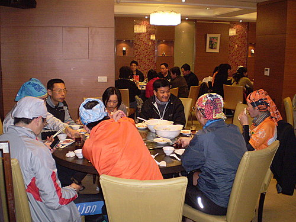
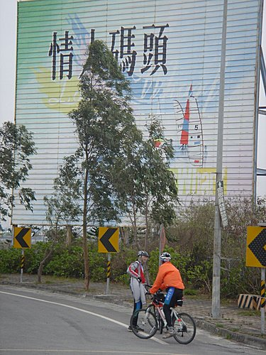
妳我算不算是一對戀人?我這樣說會不會有一點認真?快告訴我喲...........
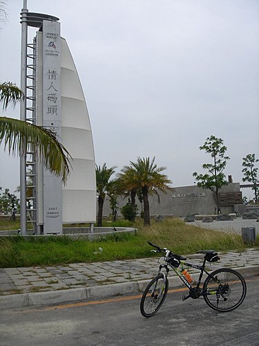
@茄定漁人碼頭
@ Trust me, I got it！I finished it.（攝於環台終點站蓮池潭）
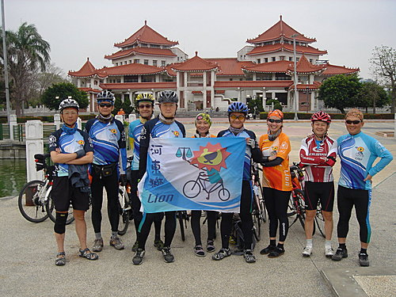
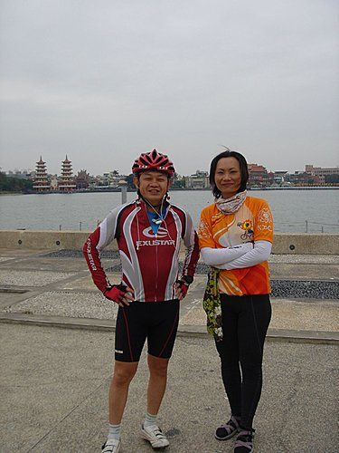
@於蓮池潭畔合影，並向一路辛苦擔任補給之吳大及肉粽致上12萬分之謝意
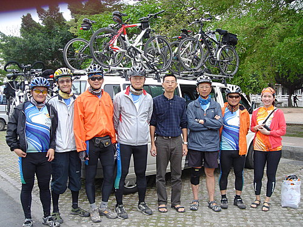
看完超哥你們地環島記錄.....這算是我看過環島車隊中...最豪華地一團了..希望塔塔加賽事能再見獅...蹤
孫兄，
時間過的很快，距離上次塔塔加短暫相遇迄今已快一年了。這次我們河東獅有部分獅支會去再上塔塔加，我本人則因最近工作太忙，塔塔加可能割愛了。有機會再相約騎車。
我們這次環島行程，特色就是吃的很好，雖然9天共騎了992公里，但我竟然又胖了一公斤，真難想像。祝
騎車愉快，塔塔加之行破個人紀錄。
超哥
祝賀河東獅七位雄獅及二位女獅友， 不畏風吹日曬雨淋, 以短短9天的時間, 完成單車環台千公里的壯舉。 很榮幸能夠參予這趟旅程, 期待今年的阿里山賽,可以一同參加.
賀河東獅二位溫柔無比的女獅友， 以堅忍不拔的毅力及精神， 完成單車環台千公里的壯舉。 仰慕者獻上 請笑納二束，